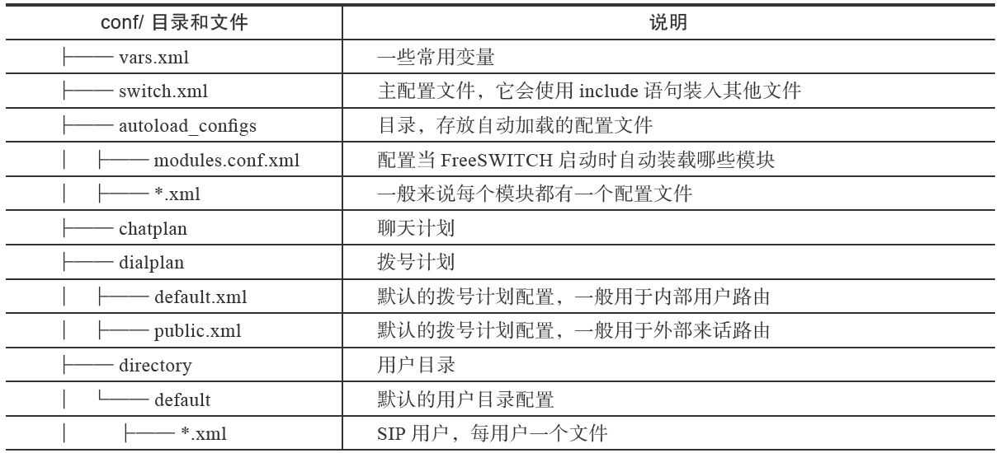
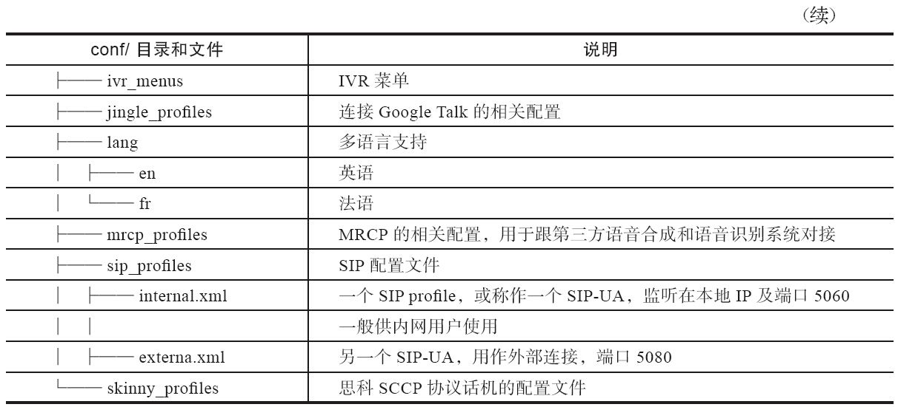

3.3 配置FreeSWITCH
FreeSWITCH配置文件默认放在conf/下，它由一系列XML配置文件组成。最顶层的文件是freeswitch.xml，系统启动时它依次装入其他一些XML文件并最终组成一个大的XML文件。基本的目录结构和主要配置文件如表3-2所示。
表3-2 配置文件的目录结构


下面我们先通过学习添加一个新的FreeSWITCH用户来简单熟悉一下FreeSWITCH的配置文件。
FreeSWITCH默认设置了20个用户（1000～1019），如果你需要更多的用户，或者想通过添加一个用户来学习FreeSWITCH配置，只需要简单执行以下三步：
1）在conf/directory/default/中增加一个用户配置文件。
2）修改拨号计划（Dialplan）使其他用户可以呼叫到它。
3）重新加载配置使其生效。
例如我们想添加用户Jack，分机号是1234。只需要到conf/directory/default目录下，将1000.xml复制到1234.xml中。打开1234.xml，将所有1000都改为1234。并把effective_caller_id_name的值改为Jack，然后存盘退出，命令如下：
<variable name="effective_caller_id_name" value="Jack"/>
接下来，打开conf/dialplan/default.xml，找到下面一行
<condition field="destination_number" expression="^(10[01][0-9])$">
将其改为
<condition field="destination_number" expression="^(10[01][0-9]|1234)$">
熟悉正则表达式的读者应该知道，“^(10[01][0-9])$”匹配被叫号码1000～1019。因此我们修改之后的表达式就多匹配了一个1234。FreeSWITCH使用Perl兼容的正则表达式（PCRE）。
现在，回到控制台或启动fs_cli，执行reloadxml命令或按快捷F6，使新的配置生效。
找到刚才注册为1001的软电话（或启动一个新的，如果你有足够的机器的话），把1001都改为1234然后重新注册，这时就可以与1000相互进行拨打测试了。如果没有多台机器，在同一台机器上运行多个软电话可能有冲突，这时可以直接进入FreeSWITCH控制台使用如下命令进行测试：
freeswitch> sofia status profile internal reg (
显示多少用户已注册)
freeswitch> originate user/1000 &echo (
同上)
freeswitch> originate user/1000 9999 (
相当于在软电话1000
上拨打9999)
freeswitch> originate user/1000 9999 XML default (
同上)
其中，echo程序是一个很简单的程序（App），它只是将你说话的内容原样再放给你听，在测试时很有用，在本书中我们会经常用它来测试。